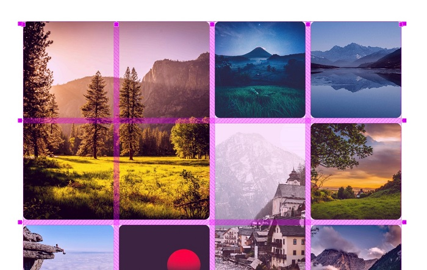
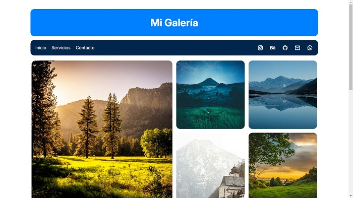
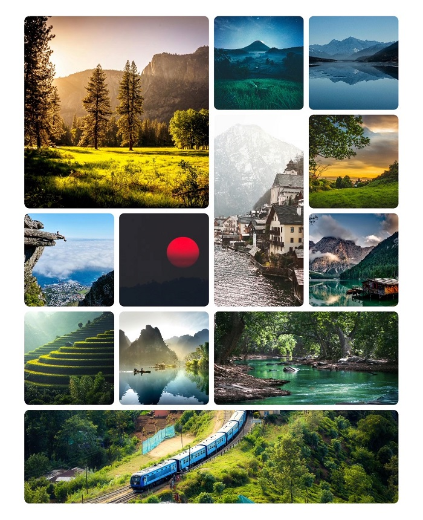

Descripción del proyecto
Desarrollé una página web para un fotógrafo especializado en paisajismo, con el objetivo de ofrecer una experiencia visual que refleje el impacto artístico de sus obras, diseñada para destacar las fotografías como el elemento principal, utilizando un diseño limpio y minimalista que prioriza la narrativa visual.
Tiempo de desarrollo
6 días
Cliente
Felipe "Fipe" Belmar
¿Necesitas un diseño parecido a este?
ContáctameTecnologías utilizadas
Más sobre este proyecto


